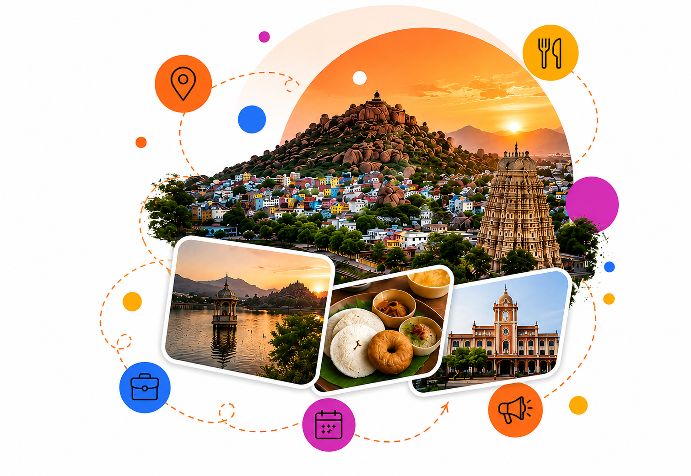
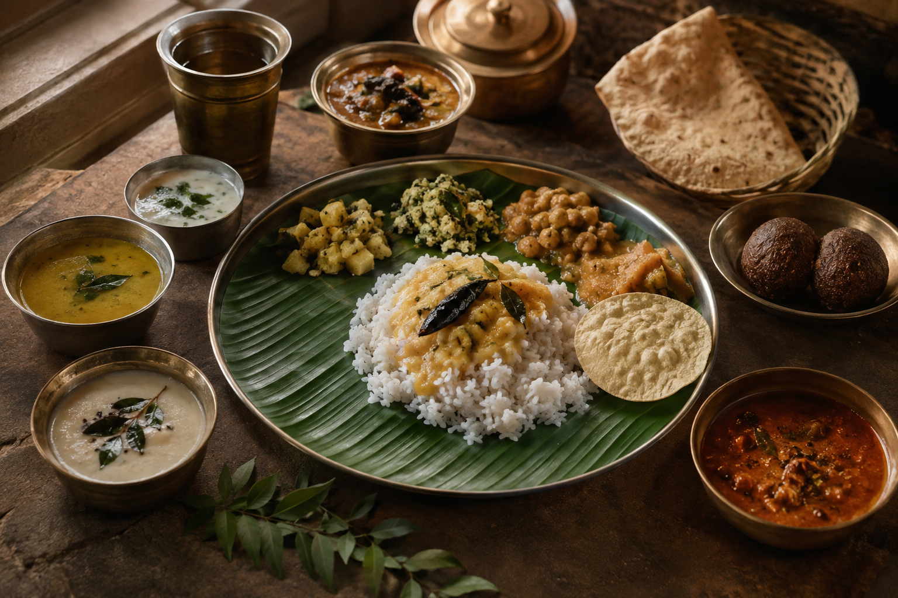
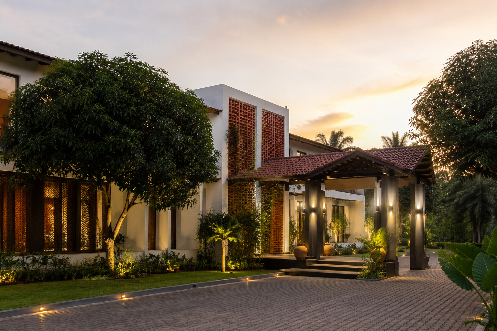
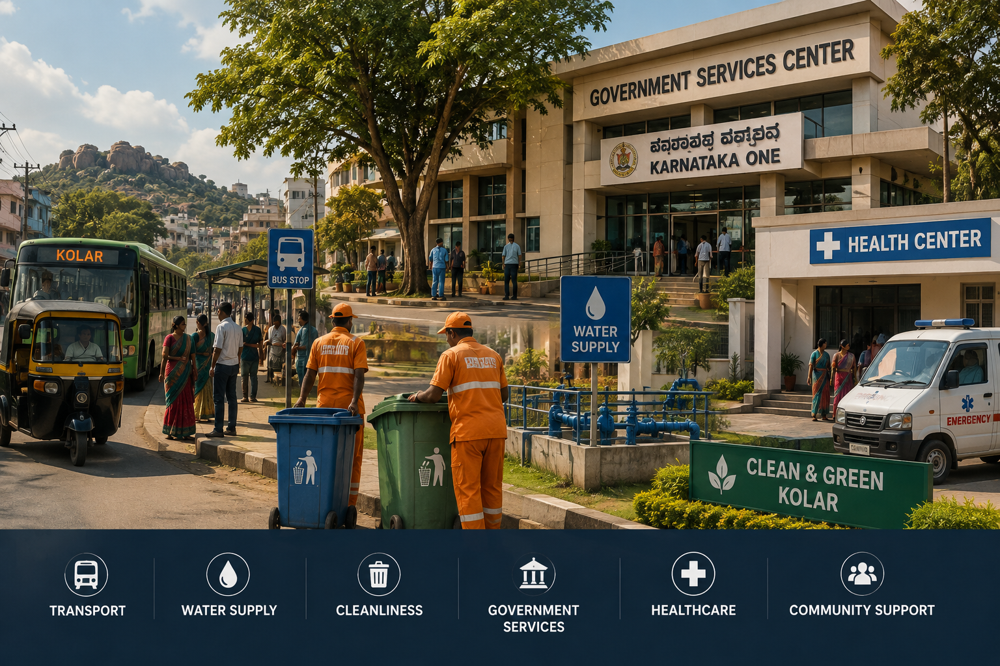
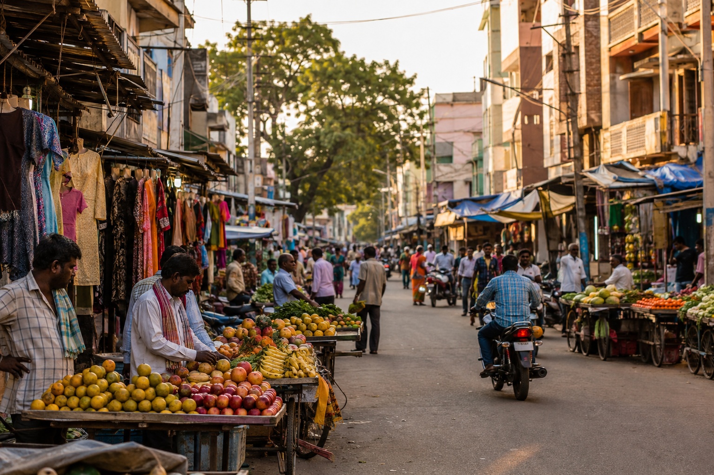
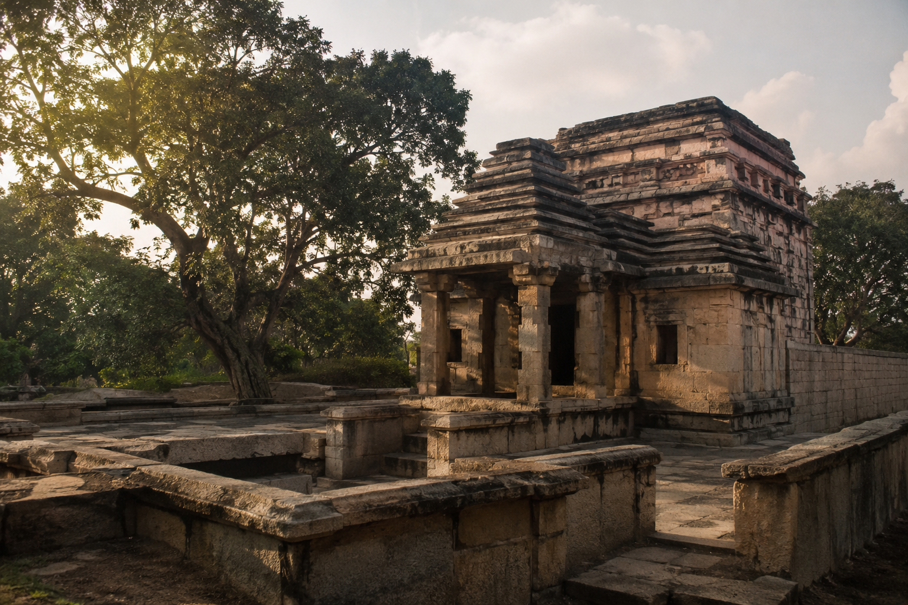
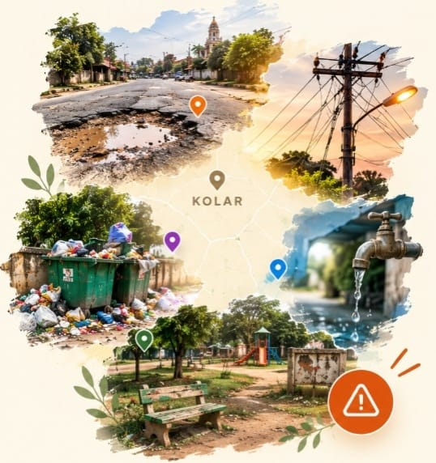

Water Supply Update in Kolar
Important information regarding local water supply and maintenance work.
WELCOME TO KOLAR
🧡 ABOUT NAMMA KOLAR 🧡
Namma Kolar is a digital platform built to connect people with everything their city has to offer — from places, food, businesses and services to events and local updates. More importantly, it gives citizens a way to raise local concerns such as potholes, damaged roads and other civic issues, helping create a cleaner, safer and better Kolar.

Discover the places, flavours, stays, services, businesses and heritage that make Kolar special.





Discover places, attractions and important locations across Kolar district.
Stay informed about the latest notices, weather, market prices and transport updates across Kolar.
Important information regarding local water supply and maintenance work.
Stay updated with the latest agricultural market prices from Kolar.
Get the latest weather information and conditions across the district.
Stay informed about important bus, road and local transport updates across Kolar.
Discover cultural, religious, community and educational events happening across Kolar.
Discover cultural activities, performances and local traditions happening in Kolar.
View Event →Explore important religious gatherings and celebrations taking place across Kolar.
View Event →Find educational programs, workshops and student-focused events happening in Kolar.
View Event →From bustling markets and fertile farms to silk, milk and centuries-old heritage — discover the stories that make Kolar unique.
Kolar has a strong connection with tomato cultivation and trade. The district's fertile agricultural regions produce large quantities of tomatoes, which are brought to the Kolar APMC market for trading. The market is described by the Kolar district administration as the second-largest APMC market in Asia and the largest in South India, making it an important centre for farmers and agricultural trade.
Mango cultivation is an important part of Kolar's agricultural identity. The district is known for its mango-growing regions, particularly Srinivaspur, where mango farming plays a major role in the local economy. During the mango season, the region becomes especially active with harvesting, trading and transportation of the fruit.
Dairy farming is closely connected with the rural life and economy of Kolar. Milk production provides an important source of income for many farming families across the district. Together with agriculture, dairy has helped shape Kolar's identity as a region associated with milk and farming.
Silk has been part of Kolar's rural economy for generations. Sericulture, the cultivation of silkworms for silk production, provides an important livelihood for farming communities. Silk cocoon production and trading add another distinctive chapter to Kolar's agricultural and economic story.
Kolar's history can be seen through its temples, architecture and traditions. Places such as Kolaramma Temple and Someshwara Temple reflect the district's long cultural and religious heritage. These historic sites connect present-day Kolar with centuries of history and make the district an important destination for heritage exploration.
Help make Kolar cleaner, safer and better by reporting local problems.
Report potholes, damaged roads and broken footpaths.
Report garbage buildup, overflowing bins and litter.
Report power outages, faulty lines and streetlight issues.
Report supply disruptions, leaks and water-related concerns.
Report damaged parks, drains, signage and public property.
